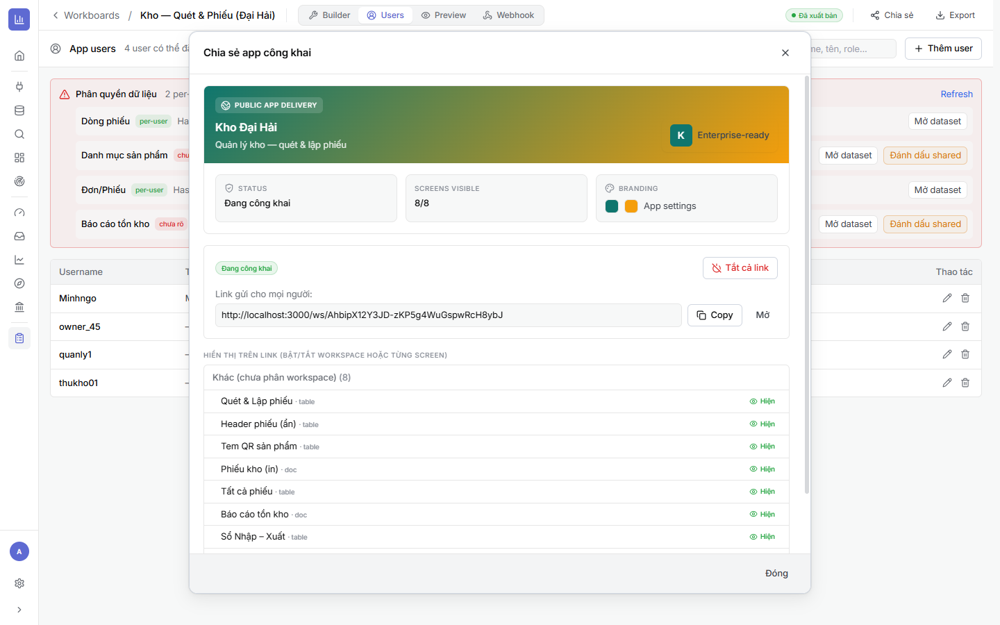

5.1Preview & xuất bản
⚙ Cách làm
- Dùng LIVE PREVIEW trong Builder (hoặc tab Preview) để thử app như người dùng — chọn thử user/role để xem RLS đúng chưa.
- Kiểm tra thao tác nhập/sửa/xoá trên các screen Form/Table.
- Khi ổn, đặt trạng thái Đã xuất bản (publish) — do owner thực hiện.
Publish do owner: chỉ chủ sở hữu mới xuất bản/gỡ xuất bản. Bản nháp vẫn chỉnh được nhưng chưa phát ra Cổng.
5.2Cổng chia sẻ — link /ws/
Là gì: bấm Chia sẻ để lấy link Cổng công khai. Đây là nơi người dùng mini-app đăng nhập & làm việc.
⚙ Cách làm
- Bấm Chia sẻ (thanh trên) → hộp Chia sẻ app công khai.
- Bật Đang công khai; copy Link gửi cho mọi người dạng
/ws/<token>. - Ở Hiển thị trên link, bật/tắt từng Workspace hoặc screen muốn cho người xem.
- BRANDING: chỉnh logo/màu app trong App settings.

/ws/AhbipX12…, và danh sách bật/tắt hiển thị từng screen.Đăng nhập của người dùng: mở link Cổng, người dùng đăng nhập bằng username (tài khoản mini-app ở Chương 4). Nhờ RLS, mỗi người chỉ thấy & ghi được dữ liệu trong phạm vi của mình.
5.3Chạy trên điện thoại (PWA) & tự động hoá
- Mobile / PWA — mở Cổng trên điện thoại, cài lên màn hình chính để dùng như app; hỗ trợ nhập liệu hiện trường (một số widget hoạt động offline-first rồi đồng bộ khi có mạng).
- Webhook (tab Webhook) — bắn sự kiện khi có bản ghi mới/đổi trạng thái (tích hợp hệ thống khác).
- Export / Import — xuất cả layout + dataset + semantic thành bundle để nhân bản app sang môi trường/khách khác (Import ở màn danh sách Workboards).
5.4Xong lộ trình Mini App — Checklist
- ✅ Đã preview theo từng role, RLS đúng (mỗi người chỉ thấy dữ liệu của mình).
- ✅ Đã publish và lấy link Cổng /ws/; bật đúng các screen cho người xem.
- ✅ Người dùng đăng nhập & nhập liệu được; cài PWA trên điện thoại nếu cần.
- ✅ (Tuỳ chọn) cấu hình Webhook, và Export để nhân bản.
Lỗi hay gặp: ① chưa publish nên link Cổng trống; ② quên bật screen cần thiết trong “Hiển thị trên link”; ③ bảng “chưa rõ” (Chương 4) khiến dữ liệu không cô lập; ④ nguồn không phải Google Sheets nên không nhập liệu được (Chương 1).
🎉 Hoàn thành lộ trình build Mini App! Bạn đã đi trọn: Dataset (Sheets) → Workboard → Màn hình → App Users & RLS → Cổng chia sẻ. Xem thêm Sản phẩm đầu cuối hoặc quay lại Mục lục Mini App.
🔗 Liên quan